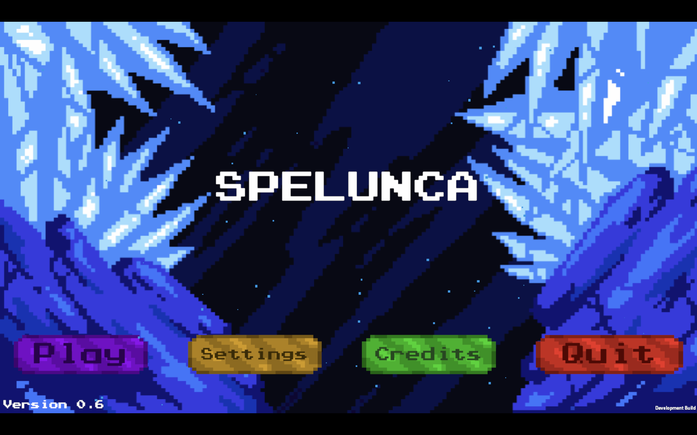
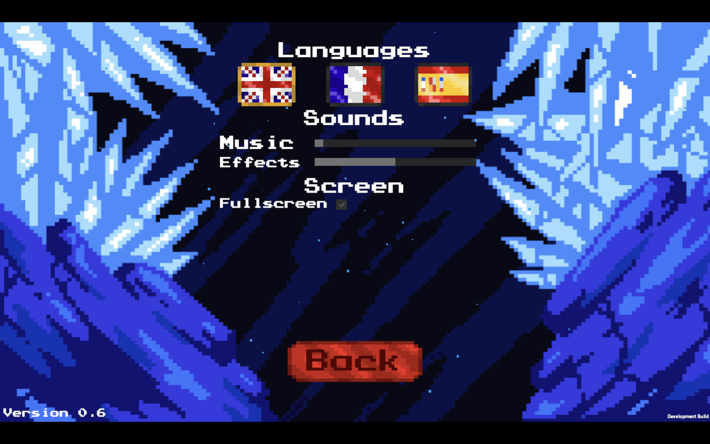
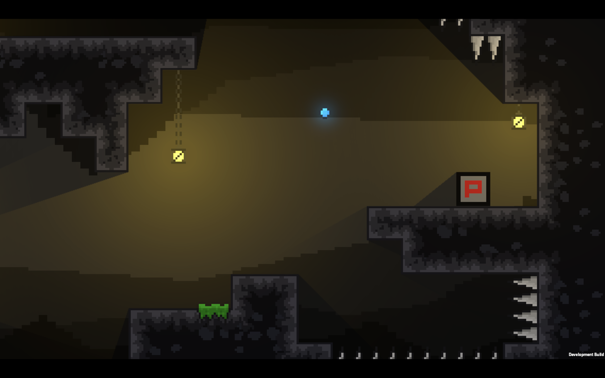

Bonjour à tous, c’est Nathan ! Vous trouverez dans cette newsletter les diverses améliorations que nous avons apportées cette semaine.
Nous avons totalement refait le menu démarré et le menu pause. Désormais ils intègrent les options pour changer les langues du jeu. Cependant, nous avons retiré la possibilité de changer la résolution du jeu pour permettre au joueur de redimensionner la fenêtre manuellement.
 Nous avons officiellement passé les tuiles du jeu en 16 pixels par 16 pixels. Pour l'occasion, nous avons refait tous les graphismes du jeu (sauf l'arrière-plan en jeu). Nous avons aussi rajouté des lumières permettant de donner un peu d'ambiance aux niveaux. Cependant, cela va beaucoup évoluer. Il s'agit d'un premier jet.
N'hésitez pas à suivre et à partager notre Projet. Vous pouvez venir nous soutenir et poser vos questions sur notre serveur Discord.
Merci d'avoir lu cette neuvième newsletter. La prochaine newsletter sera publié le 24/01/2022.
Team Spelunca.
Rédaction : Nathan DELORME et Arthur PELLEGRINI